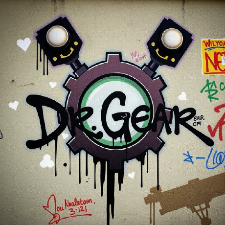

About Me
Hi, I'm Dr.Gears, aka TD! I'm a passionate Python and Web App developer with a knack for creating innovative projects.
My journey started with small Python scripts and has since grown into developing full-fledged applications and websites.
Over the years, I've gained experience in several coding languages and frameworks, including Python, C#, and .NET Core.
I enjoy problem-solving, and pushing my limits with challenging projects.
Outside of coding, I have a variety of hobbies! I enjoy gaming, learning about new technologies, and experimenting with creative ideas for my projects.